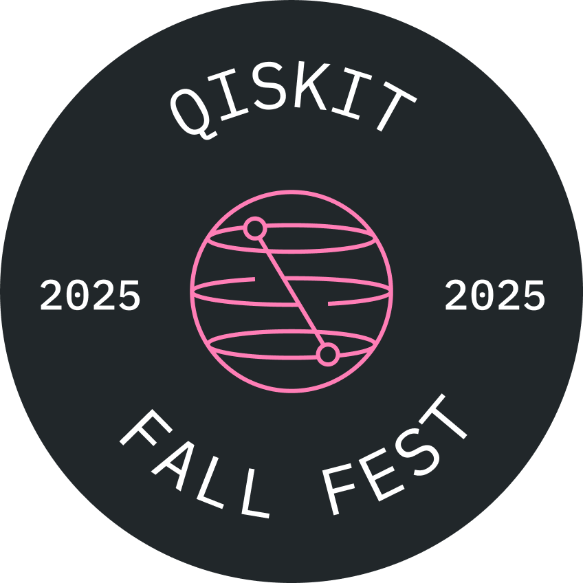
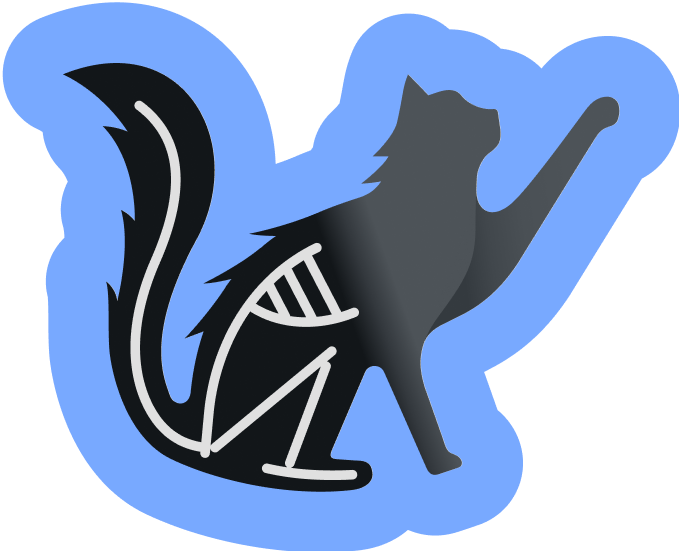
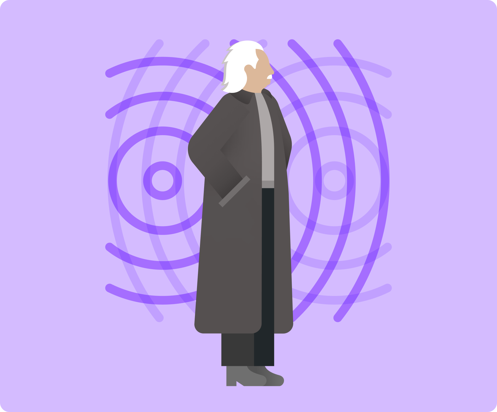
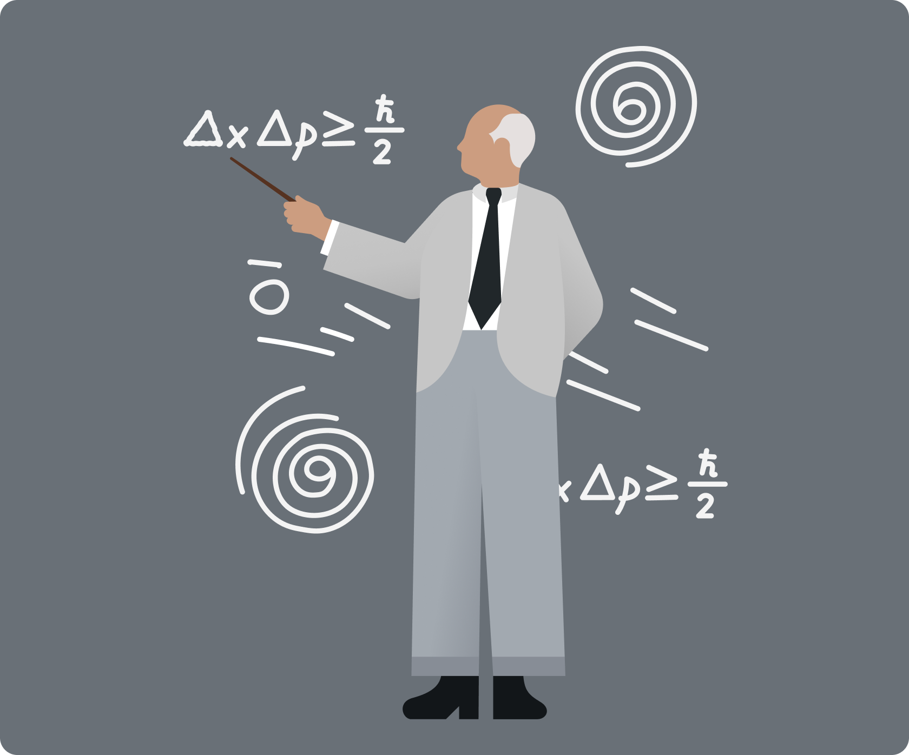
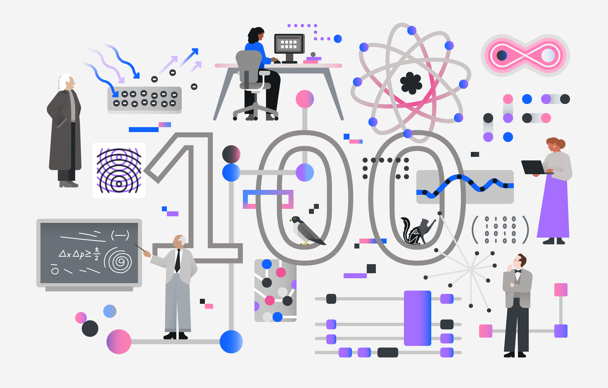

Hosted by:

TPSA participated in the Qiskit Fall Fest 2025. Qiskit Fall Fest is a student-led, worldwide series of events that brings people together to explore and learn about quantum computing. As this year marks 100 years of quantum mechanics, we are hosting a number of events to celebrate this milestone.


Our first event of the 2025 Fall Fest was a talk by Professor John Goold on Wednesday 1st October in the Joly lecture theatre. He discussed "Dynamical simulations of many-body quantum chaos on a quantum computer".
Abstract: Quantum circuits with local unitaries have emerged as a rich playground for the exploration of many-body quantum dynamics of discrete-time systems. While the intrinsic locality makes them particularly suited to run on current quantum processors, the task of verification at non-trivial scales is complicated for non-integrable systems. Here, we study a special class of maximally chaotic circuits known as dual unitary circuits -- exhibiting unitarity in both space and time -- that are known to have exact analytical solutions for certain correlation functions. With advances in noise learning and the implementation of novel error mitigation methods, we show that a superconducting quantum processor with 91 qubits is able to accurately simulate these correlators. We then probe dynamics beyond exact verification, by perturbing the circuits away from the dual unitary point, and compare our results to classical approximations with tensor networks. These results cement error-mitigated digital quantum simulation on pre-fault-tolerant quantum processors as a trustworthy platform for the exploration and discovery of novel emergent quantum many-body phases. In addition I will discuss some work on embedding non-ergodic subspaces within dual unitary circuits.
As part of Qiskit Fall Fest, we developed comprehensive learning resources to help participants master Qiskit.
Our introduction to Qiskit featured a series of YouTube videos that guided participants from fundamental concepts—including what quantum computing is and how to install Qiskit—through to advanced topics like molecular modeling. These videos offered an excellent opportunity to develop skills widely used in both quantum computing research and industry.

To apply what they learned, participants worked through the IBM Qiskit notebooks. These exercises covered concepts from the video series along with additional quantum computing principles.
Participants downloaded the Jupyter Notebook files and uploaded them to Google Colab to get started. Everyone who completed the notebooks received a certificate of participation from IBM Quantum. Participants submitted their completed notebooks to receive their certificate and access the solutions.
We also hosted a hackathon where participants put their Qiskit skills to the test.
Participants chose from two exciting challenges: Quantum Battleships or Protein Folding. In Quantum Battleships, they developed a quantum circuit that used fundamental quantum concepts to locate every ship on the grid and achieve victory without firing a shot. The Protein Folding challenge invited them to create a quantum algorithm for predicting protein structures.
Both challenges were suitable for beginners getting started with Qiskit or experienced users looking to explore more advanced implementations.
Teams worked on their chosen challenge until mid-November.

On Thursday, October 30th, we held a dedicated hackathon session with Niall Robertson, a researcher from IBM Dublin, who answered Qiskit questions and shared insights about his research and current projects at IBM Dublin.
On Monday, November 10th, we hosted a Quantum Computing Panel Discussion. This event brought together professionals from the quantum computing industry and academia to explore the current state of the field, discuss future prospects and expectations, and provide insights into how students can pursue careers in this exciting industry.
Our lineup included:
Panel Host: Conor Ryan - PhD Student in the School of Physics at Trinity College Dublin
Professor Felix Binder - Assistant Professor in the School of Physics at Trinity College Dublin
Victor Baycroft - IBM Dublin
Matea Leahy - Algorithmiq
We began with the panel discussion, followed by a Q&A session. Light refreshments were served afterward, giving attendees the opportunity to network with speakers and fellow participants.
